Alterações no QGIS 2.16¶
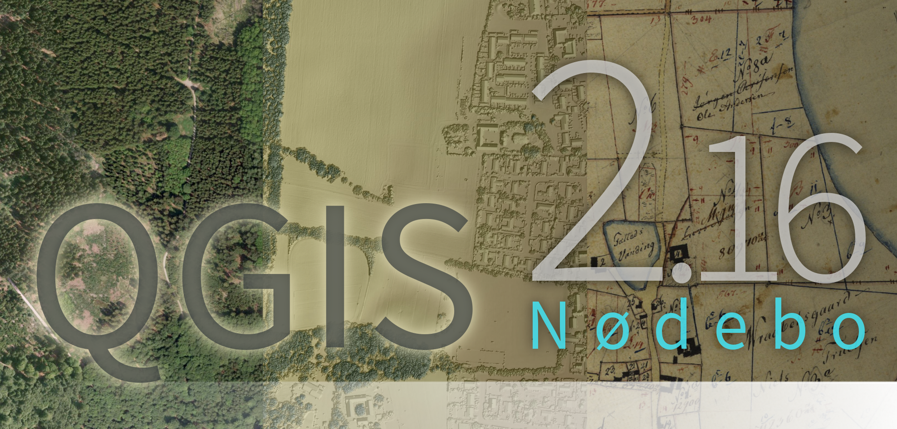
Este é o log da próxima versão do QGIS - versão 2.16.0 ‘Nødebo’. O Departamento de Geociência e Gestão de Recursos Naturais do Forest and Landscape College, em Nødebo, foi anfitrião da primeira conferência internacional do QGIS e reunião de desenvolvedores em maio de 2015.
Este não é um lançamento de Longa Duração
Esse lançamento não é designado como uma versão Long Term Release (LTR). Os usuários que desejam ter uma versão do QGIS que não muda e recebe correções de bugs durante pelo menos 1 ano são convidados a utilizar a atual versão LTR 2.14 (que agora se torna a nossa LTR oficial com o lançamento do QGIS 2.16).
Novas funcionalidades no QGIS 2.16 ‘Nødebo’
Se você está atualizando do QGIS 2.14, você encontrará muitos novos recursos nesta versão. Nós encorajamos você a ler os changelogs para versões anteriores, como esta versão 2.16 do QGIS inclui todos os recursos publicados nesses lançamentos também.
Sempre que são adicionadas novas funções ao software existe a possibilidade de ocorrerem novos bugs - se encontrar algum nesta versão, por favor comunique-nos através do formulário QGIS Bug Tracker <http://hub.qgis.org>`__.
Apresentando Nødebo |
Pronunciando Nødebo …
Agradecimentos
We would like to thank the developers, documenters, testers and all the many folks out there who volunteer their time and effort (or fund people to do so). From the QGIS community we hope you enjoy this release! If you wish to donate time, money or otherwise get involved in making QGIS more awesome, please wander along to qgis.org and lend a hand!
QGIS is supported by donors and sponsors. A current list of donors who have made financial contributions large and small to the project can be seen on our donors list. If you would like to become an official project sponsor, please visit our sponsorship page for details. Sponsoring QGIS helps us to fund our six monthly developer meetings, maintain project infrastructure and fund bug fixing efforts. A complete list of current sponsors is provided below - our very great thank you to all of our sponsors!
O QGIS é um software gratuito e você não tem obrigação de pagar nada para usá-lo - na verdade, queremos encorajar as pessoas a usá-lo independentemente de qual seja seu status financeiro ou social - acreditamos que capacitar as pessoas com ferramentas de tomada de decisões espaciais resultar em uma sociedade melhor para toda a humanidade. Se você é capaz de suportar o QGIS, você pode | doar aqui |.
- Patrocinadores do QGIS versão 2.16.0
- Geral
- Recurso: Copiando feições no formato GeoJSON
- Recurso: Armazene marcadores espaciais no arquivo de projeto
- Recurso: Suporte para mensagens GNSS GNRMC
- Funcionalidade: Cole feições GeoJSON diretamente no QGIS
- Funcionalidade: Melhorias nas dicas de mapa
- Recurso: ícones MIME de desktop para tipos de arquivo QGIS
- Interface do Usuário
- Recurso: Ampliador da tela do mapa
- Funcionalidades: Melhorias nas ferramentas de aproximar/afastar
- Recurso: Editor de gradiente interativo reprojetado
- Funcionalidade: Escolha da visualização padrão para o diálogo de atributos
- Funcionalidade: Melhorias nas janelas de calendário
- Recurso: Colhedores de cores aprimorados
- Funcionalidade: Copia o conteúdo da célula da tabela de atributos
- Feature: Improved HiDPI support
- Funcionalidade: Melhorias no comportamento da ferramenta de seleção do mapa
- Atualizações na Documentação
- Simbologia
- Funcionalidade: Camada de símbolos de seta
- Funcionalidade: Novo tipo de camada de símbolo “marcador preenchido”
- Funcionalidade: Nova acessibilidade e símbolos de baixa visão
- Funcionalidade: Novos símbolos de marcadores simples
- Recurso: renderizador “Sem símbolo”
- Funcionalidade: Maior controle sobre a renderização do ponto de preenchimento do centróide
- Recurso: configuração de contorno para símbolo de marcadores de fonte
- Funcionalidade: estilo de junção de contorno de controle para marcadores simples, de elipse e de fonte
- Funcionalidade: Nova ferramenta de mapas para o ajuste interativo de símbolos de pontos
- Recurso: Dock Estilo
- Rotulagem
- Diagramas
- Renderização
- Digitizing
- Gerenciamento de dados
- Funcionalidade: Novas opções de configuração para a tabela de atributos
- Funcionalidade: Várias colunas em formulários de atributo
- Recurso: controle sobre atributos para exportar ao salvar uma camada vetorial
- Funcionalidade: Visualização de formulários: coluna lateral agora classificável
- Recurso: widget de referência de referência: atalho para adicionar novos valores
- Funcionalidade: Melhorias na exportação de DXF
- Recurso: widgets de nível superior no designer de arrastar e soltar
- Recurso: selecione com base em formulário e filtre
- Funcionalidade: Cria camadas GeoPackage
- Recurso: restrições em widgets
- Feição: Editar atributos de várias feições simultaneamente
- Layer Legend
- Compositor de Mapa
- Feição: Ferramenta nova para desenhar polígonos e polilinhas
- Feature: Relative links in composer labels
- Feature: Embed atlas features into composer HTML source as GeoJSON
- Feature: Parameterized svg support for composer svg images
- Feature: Easier use of HTML in labels
- Feature: Georeference outputs (eg PDF) from composer
- Feature: Composer maps now auto-update with presets
- Ferramentas de análise
- Funcionalidade: Parâmetros nomeados em expressões
- Funcionalidade: Mais unidades de distância
- Feature: Changes to expressions
- Feature: Statistics for string and date fields
- Feature: Show curve point radius in info tool
- Funcionalidade: Suporte agregado para expressões
- Funcionalidade: Plugin fTools foi substituído por Algoritmos de Processamento
- Processamento
- Feature: Set point locations by clicking on canvas
- Funcionalidade: Suporte para expressões e variáveis
- Funcionalidade: Algoritmos pré-configurados
- Feature: Create a plugin with script-based algorithms from the toolbox
- Feature: Use of authentication manager in PostGIS related algorithms
- Funcionalidade: Suporte para tabelas escritas sem geometria
- Funcionalidade: Algoritmos adicionais GRASS em processamento
- Provedores de Dados
- Feature: OGR datasets are opened in read-only mode by default
- Feature: Improved handling of Postgres DOMAIN type fields
- Funcionalidade: Crie o modo de apenas leitura para camadas de vetores configuráveis no projeto
- Funcionalidade: Suporte para base de dados DB2
- Feature: Refresh Postgres materialized views in db manager
- Feature: OGR FID attribute shown
- Feature: ArcGIS Map and Feature REST services
- Funcionalidade: Salve estilos em MS SQL e base de dados Oracle
- Funcionalidade: Renomear campos em camadas
- Funcionalidade: Suporte básico para Oracle Workspace Manager
- Funcionalidade: Melhorias massivas no Provedor WFS
- Feature: Generation of default values on Postgres layers “just in time”
- Servidor QGIS
- Complementos
- Programabilidade
- Correções Importantes
Patrocinadores do QGIS versão 2.16.0¶
Anualmentre também recebemos apoio de várias organizações que valorizam o trabalho que fazemos e que gostariam de facilitar o esforço sustentado de desenvolvimento que vai para o projeto. Estes patrocinadores estão listados abaixo com o nosso agradecimento!
  Grupo de usuário QGIS da Suíça, Suíça (06.2016-06.2017) Grupo de usuário QGIS da Suíça, Suíça (06.2016-06.2017) |
  Estado de Vorarlberg, Austria (11.2011-06.2017) Estado de Vorarlberg, Austria (11.2011-06.2017) |
 Office of Public Works, Irlanda, Ireland (12.2014-12.2016) Office of Public Works, Irlanda, Ireland (12.2014-12.2016) |
 GAIA mbh, Alemanha (06.2013-11.2016) GAIA mbh, Alemanha (06.2013-11.2016) |
 Sourcepole AG, Suíça (10.2014-10.2016) Sourcepole AG, Suíça (10.2014-10.2016) |
www.terrelogiche.com, Itália (06.2015-06.2017) |
QGIS-PT (Grupo de usuário QGIS de Portugal), Portugal (06.2016-06.2017) |
NCC, Suécia (05.2016-05.2017) |
SOLTIG (Soluções em Tecnologias de Informação Geográfica), Costa Rica (06.2016-06.2017) |
Gaia3D, Inc., Coreia do Sul (05.2015-05.2017) |
GEPOL, Polônia (04.2016-04.2017) |
Royal Borough of Windsor and Maidenhead, Reino Unido (04.2015-04.2017) |
GFI - Gesellschaft für Informationstechnologie mbH, Alemanha (04.2015-04.2017) |
|
Teaching Jobs with Footprints, Canadá (04.2016-04-2017) |
FORNAT AG, Suíça (04.2014-04.2017) |
National Parks UK, Reino Unido (03.2016-03-2017) |
KBB Underground Technologies, Alemanha (03.2014-03.2017) |
BGEO OPEN GIS, SL, Espanha (03.2016-03-2017) |
Ager Technology, Espanha (03.2014-03.2017) |
Asociación Geoinnova, Espanha (03.2016-03-2017) |
Gis3W, Itália (01.2014-01.2017) |
GIS-Support, Polônia (02.2015-03-2017) |
www.molitec.it, Itália (01.2014-03.2017) |
Chartwell Consultants Ltd., Canadá (03.2015-03.2017) |
Trage Wegen vzw, Bélgica (03.2015-03.2017) |
GKG Kassel (Dr.-Ing. Claas Leiner), Alemanha (03.2014-03.2017) |
CawdorForestry Resource Management, Escórcia (02.2016-02.2017) |
ChameleonJohn, EUA (02.2016-02.2017) |
2D3D.GIS, França (12.2015-12.2016) |
Dr. Kerth + Lampe Geo-Infometric GmbH, Alemanha (12.2015-12.2016) |
MappingGIS, Espanha (11.2015-11.2016) |
HostingFacts.com, Estônia (12.2015-12.2016) |
Urbsol, Australia (11.2014-11.2016) |
Lutra Consulting, Reino Unido (10.2015-10.2016) |
WhereGroup GmbH & Co. KG, Alemanha (08.2015-08.2016) |
Nicholas Pearson Associates <http://www.npaconsult.co.uk/>`_, Reino Unido (07.2015-07.2016) |
QGIS Polska, Polônia (07.2015-07.2016) |


{kind=link}
{kind=link}
{kind=link}
Geral¶
Recurso: Copiando feições no formato GeoJSON¶
A configuração anterior para incluir WKT ao copiar recursos foi substituída por uma opção de recursos de cópia como “Texto simples, somente atributos”, “Texto simples, geometria WKT” e uma nova opção “GeoJSON”. Quando configurado para “GeoJSON”, a cópia de recursos no QGIS colocará uma representação de texto GeoJSON dos recursos na área de transferência para facilitar a colagem em outros aplicativos / código JavaScript. Estas configurações podem ser encontradas em “Configurações -> Opções -> Fontes de Dados -> Copiar recursos como” “.

Este recurso foi desenvolvido por Nyall Dawson (North Road)
Recurso: Armazene marcadores espaciais no arquivo de projeto¶
Se você estiver criando um marcador espacial, agora pode escolher armazenar o marcador no arquivo de projeto ativo. Percorra o painel de marcadores para encontrar a caixa de seleção que habilita esse recurso.

Este recurso foi desenvolvido por Stéphane Brunner <http://www.camptocamp.com/>`__
Recurso: Suporte para mensagens GNSS GNRMC¶
QGIS pode agora lidar com dados do satélite GLONASS ($GN* lines) para obter uma posição mais precisa dos receptores externos GPS/GNSS.

Esta funcionalidade foi desenvolvida por Ondřej Fibich
Funcionalidade: Cole feições GeoJSON diretamente no QGIS¶
O manipulador de área de transferência do QGIS agora pode analisar muitos formatos de texto adicionais, incluindo suporte nativo para coleções de recursos do GeoJSON. Isso permite que você copie e cole strings GeoJSON diretamente no QGIS e as converta automaticamente em recursos e geometrias do QGIS.
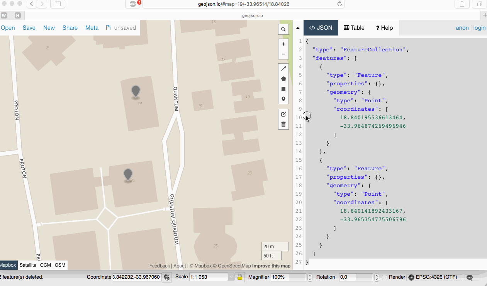
Este recurso foi desenvolvido por Nyall Dawson (North Road)
Funcionalidade: Melhorias nas dicas de mapa¶
- A visibilidade do Maptip agora é preservada nas sessões
- Maptips agora pode mostrar conteúdo HTML, incluindo imagens, vídeos e links de URL

Esta funcionalidade foi fundada por OPENGIS.ch GmbH
Esta funcionalidade foi desenvolvida por Marco Bernasocchi (OpenGIS.ch)
Recurso: ícones MIME de desktop para tipos de arquivo QGIS¶
Agora é mais fácil reconhecer e diferenciar os tipos de arquivos do QGIS no gerenciador de arquivos do sistema operacional. Existem agora ícones MIME de desktop para os seguintes tipos de arquivo:
- *. qgs - arquivo do projeto QGIS
- *. qml - arquivo de configurações da camada
- *. qlr - arquivo de definições de camada
- *. qpt - Arquivo de modelo do Composer

Esta funcionalidade foi desenvolvida por Alexandre Neto
Interface do Usuário¶
Recurso: Ampliador da tela do mapa¶
Uma ferramenta de ampliação foi adicionada ao QGIS, que permite ampliar o mapa em uma determinada escala. Isso permite aumentar o zoom em um mapa sem alterar a escala do mapa, facilitando o ajuste preciso das posições de rótulos e símbolos. Além disso, um valor de ampliação padrão pode ser definido nas configurações, o que é muito útil para telas de alta resolução!

Esta funcionalidade foi fundada por the QWAT project
Esta funcionalidade foi desenvolvida por Paul Blottiere (Oslandia)
Funcionalidades: Melhorias nas ferramentas de aproximar/afastar¶
QGIS 2.16 traz melhorias na forma como você pode ampliar e reduzir a tela do mapa.
- Segurar: kbd: Ctrl enquanto usa a roda do mouse para aumentar ou diminuir o zoom agora resulta em um zoom mais fino. Esse comportamento aproxima a tela do compositor.
- Pressionando: kbd: Ctrl ++ ou: kbd: Ctrl + - executa um zoom imediato na tela do mapa
- Quando certas ferramentas de mapas estão ativas, você pode executar um zoom de estilo de mapa da web pressionando: kbd: Shift e arrastando um retângulo no mapa para aumentar o zoom nessa área. Isso é ativado para as ferramentas de mapa que não são ferramentas de seleção (já que elas usam shift para adicionar à seleção) e editam ferramentas.

Este recurso foi desenvolvido por Nyall Dawson (North Road)
Recurso: Editor de gradiente interativo reprojetado¶
O editor gradiente de rampa foi reformulado com controles interativos para facilitar a manipulação de gradientes. A caixa de diálogo agora também inclui um gráfico interativo para modificar as paradas de gradiente por meio dos valores de cor HSV ou RGB. O novo editor apresenta:
- arraste para mover as paradas de cor
- clique duplo para adicionar um novo nó
- pressionar delete irá remover o nó selecionado
- pressionando as teclas de seta irá mover a parada selecionada, e segurando shift enquanto pressionar uma tecla do cursor resulta em um movimento maior
- arraste e solte uma cor no widget para adicionar uma nova parada

Este recurso foi desenvolvido por Nyall Dawson (North Road)
Funcionalidade: Escolha da visualização padrão para o diálogo de atributos¶
DiálogoNas versões anteriores do QGIS, o diálogo de atributos sempre seria aberto na exibição de tabela. Agora, você tem a opção de sempre padronizar a caixa de diálogo para a visualização de tabela, a visualização de formulário ou para lembrar a última visualização usada.

Este recurso foi desenvolvido por Nyall Dawson (North Road)
Funcionalidade: Melhorias nas janelas de calendário¶
A data de hoje é agora destacada nos widgets pop-up de calendário, facilitando a seleção de uma data em relação ao dia atual.

Este recurso foi desenvolvido por Nyall Dawson (North Road)
Recurso: Colhedores de cores aprimorados¶
Os menus suspensos dos botões coloridos agora mostram uma roda de cores, permitindo ajustes muito rápidos às cores.
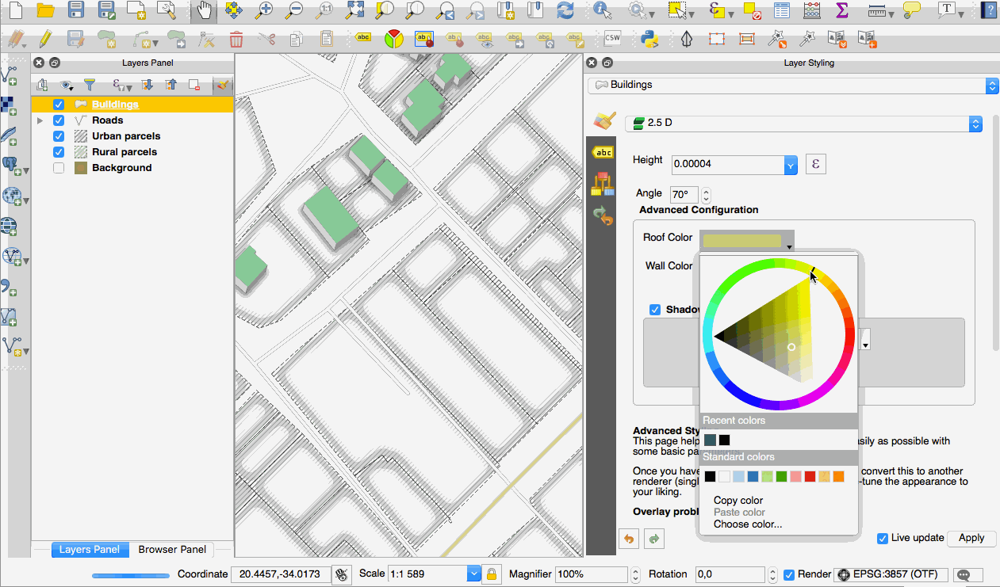
Esta feição foi desenvolvida por Nathan Woodrow
Funcionalidade: Copia o conteúdo da célula da tabela de atributos¶
A new context menu item called Copy cell content is now available in the menu
opened by a right click on a cell within the attribute table. When this button
is clicked, the content of the cell is copied in the clipboard, whatever the kind of widget.
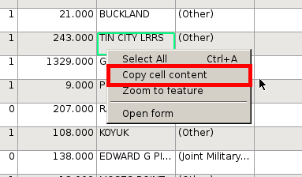
Esta funcionalidade foi desenvolvida por Paul Blottiere (Oslandia)
Feature: Improved HiDPI support¶
HiDPI screen users will notice an improved user interface as more work has been done to upgrade icons to rely on SVG images. As of QGIS 2.16, all toolbars are now HiDPI-compatible.

Esta funcionalidade foi desenvolvida por Mathieu Pellerin
Funcionalidade: Melhorias no comportamento da ferramenta de seleção do mapa¶
O comportamento das ferramentas de seleção baseadas em mapas foi refinado, com as seguintes alterações:
Para seleções de clicar e arrastar:
- segurando: kbd: Shift = adicionar à seleção
- segurando: kbd: Ctrl = subtrair da seleção
- holding: kbd: Ctrl + Shift = cruza com a seleção atual
- segurando: kbd: Alt (pode ser usado com: kbd:` Shift` /: kbd: Ctrl também) = muda de” intersects “para” fully contains “
Para seleções com um clique:
- holding: kbd: Shift ou: kbd:` Ctrl` = para alternar se o recurso está selecionado (isto é, adicionar à seleção atual ou remover da seleção atual)
Essa alteração alinha o comportamento da tela com outros aplicativos de design e também com o comportamento do compositor.

Este recurso foi desenvolvido por Nyall Dawson (North Road)
Atualizações na Documentação¶
Funcionalidade: Documentação QGIS 2.14¶
Tendo agora uma maneira automática de criar um ticket no repositório de documentação para cada novo recurso no QGIS, temos certeza de que todos os novos recursos estão agora na documentação.
A equipe de documentação trabalhou intensamente em três versões do QGIS: 2.10, 2.12 e 2.14, de modo que a documentação agora está atualizada para a liberação de longo prazo atual do QGIS. São cerca de 180 novos recursos documentados em 4 meses.
Se você acha que há alguns recursos ausentes na documentação, sinta-se à vontade para adicionar um novo ticket, escrever um pequeno texto para descrevê-lo ou enviar uma contribuição melhor.
A equipe de documentação também trabalhou no aprimoramento das diretrizes de documentação para facilitar o processo de contribuição para novos redatores de documentos e ajudar os tradutores.
A equipe de documentação agora trabalhará duro nos próximos meses para documentar a versão estável atual (2.16) do QGIS.

Verifique o marco 2.10, 2.12 e 2.14 para ver todo o trabalho de documentação que ocorreu:
Funcionalidade: Documentação do sistema de autenticação no manual do usuário¶
Os recursos do sistema de autenticação introduzidos em versões anteriores do QGIS (2.12 e 2.14) estão agora totalmente documentados no manual do usuário, e serão uma ótima contribuição para o entendimento e a adoção do sistema.

Esta funcionalidade foi fundada por Boundless
Esta funcionalidade foi desenvolvida por Larry Shaffer
Simbologia¶
Funcionalidade: Camada de símbolos de seta¶
A camada de símbolo “seta” é uma camada de símbolo que permite desenhar setas retas ou curvas a partir de uma camada de linha.
No modo curvado, os nós da camada de linha à qual essa camada de símbolo é aplicada são usados como pontos de controle para arcos de círculo. As setas podem ser preenchidas com qualquer estilo de preenchimento existente que o QGIS suporte. As opções também permitem selecionar o tipo de seta (com uma ou duas cabeças, simples ou metade), sua largura (que pode ser variável) e tamanho das cabeças.

Este recurso foi financiado pelo MEEM (Ministério de Desenvolvimento Sustentável da França) <http://www.developpement-durable.gouv.fr/> `__ e Andreas Neumann
Esta funcionalidade foi desenvolvida por Hugo Mercier
Funcionalidade: Novo tipo de camada de símbolo “marcador preenchido”¶
Um “marcador preenchido” é semelhante à camada de símbolo de marcador simples, exceto pelo fato de usar um símbolo secundário de preenchimento para renderizar o marcador. Isso permite o uso de todos os estilos existentes de preenchimento (e estrutura de tópicos) do QGIS para renderizar marcadores, por exemplo, preenchimentos com gradiente ou shapeburst.
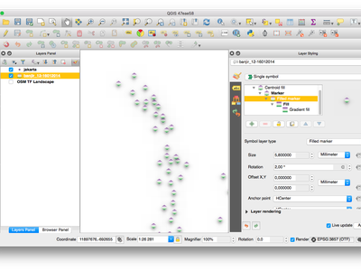
Este recurso foi desenvolvido por Nyall Dawson (North Road)
Funcionalidade: Nova acessibilidade e símbolos de baixa visão¶
Símbolos adicionais de acessibilidade e baixa visibilidade estão agora disponíveis na coleção de símbolos SVG do QGIS.

Esta funcionalidade foi desenvolvida por Mathieu Pellerin
Funcionalidade: Novos símbolos de marcadores simples¶
- semicírculo, terceiro, círculos de um quarto
- marcadores de meio triângulo
- preenchido marcadores de cruz e hexágono
- marcador de elipse de diamante

Esta funcionalidade foi desenvolvida por Mathieu Pellerin
Recurso: renderizador “Sem símbolo”¶
Usando o novo renderizador “Sem símbolo” no QGIS 2.16, nenhum símbolo será desenhado para os recursos, mas os rótulos, diagramas e outras partes que não sejam símbolos serão mostrados.
As seleções ainda podem ser feitas na camada na tela e os recursos selecionados serão renderizados com um símbolo padrão. Os recursos que estão sendo editados também serão exibidos.
Isto serve como um atalho útil para camadas para as quais você deseja mostrar apenas rótulos ou diagramas, e evita a necessidade de renderizar símbolos com preenchimento / borda totalmente transparentes para conseguir isso. Pode não parecer útil a partir do título - mas é um atalho bastante útil!

Este recurso foi desenvolvido por Nyall Dawson (North Road)
Funcionalidade: Maior controle sobre a renderização do ponto de preenchimento do centróide¶
Uma opção foi adicionada para controlar se o marcador é desenhado em todas as partes ou em uma única parte de vários recursos.

Esta funcionalidade foi desenvolvida por Mathieu Pellerin
Recurso: configuração de contorno para símbolo de marcadores de fonte¶
O símbolo de marcadores de fonte agora pode ter contorno, o que pode ajudar a aumentar a visibilidade desses símbolos, adicionando uma cor de buffer de contorno. Caracteres de fonte habilitados para Emoji podem servir como marcadores agradáveis quando usados com um contorno espesso.

Esta funcionalidade foi desenvolvida por Mathieu Pellerin
Funcionalidade: estilo de junção de contorno de controle para marcadores simples, de elipse e de fonte¶
Os usuários agora podem alterar o estilo de junção de contornos para marcadores simples, de elipse e de fonte, a fim de ajustar sua simbologia.

Esta funcionalidade foi desenvolvida por Mathieu Pellerin
Funcionalidade: Nova ferramenta de mapas para o ajuste interativo de símbolos de pontos¶
Permite definir o deslocamento de um ponto se ele estiver vinculado a um campo usando substituições definidas pelos dados. O campo de deslocamento deve ser um campo de texto. A ferramenta de mapa para definir interativamente o deslocamento está na barra de ferramentas `` Digitalização avançada`` no grupo de ícones com a ferramenta `` Rotate Point Symbols``. Veja a animação anexada para um exemplo. Observe que ao fazer ajustes subseqüentes no deslocamento, você deve arrastar do marcador de vértice do ponto original, não a posição atual do símbolo como renderizado no mapa.

Este recurso foi desenvolvido por Nyall Dawson (North Road)
Recurso: Dock Estilo¶
O painel de estilo é a mais nova, e muito mais eficiente, maneira de gerenciar estilos de camada em QGIS. Ele suporta uma visualização ao vivo de mudanças no estilo de como eles são feitos, suporte completo para desfazer/refazer e um fluxo de trabalho menos distraído enquanto você se prepara o seu mapa cartografia. Para uma visão completa das funções do painel de estilo, consulte style dock part 1 e style dock part 2.

Este recurso foi desenvolvido por Nathan Woodrow
Rotulagem¶
Funcionalidade: as ferramentas de mapa de rotulagem agora funcionam com rotulagem baseada em regras¶
Nas versões anteriores do QGIS, quando a rotulagem baseada em regras estava em vigor, não era possível usar as ferramentas do mapa de rotulagem para posicionar e rotacionar interativamente posições de rótulos. Isso agora é suportado.

Esta funcionalidade foi desenvolvida por Martin Dobias
Diagramas¶
Recurso: entradas de legenda para o tamanho do diagrama¶
Uma nova guia “legenda” foi adicionada às propriedades do diagrama, permitindo que a legenda do atributo existente e uma nova legenda de tamanho sejam ativadas / desativadas. A legenda do tamanho tem um símbolo de marcador configurável.
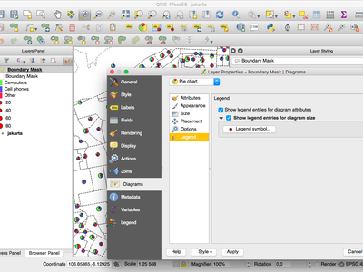
Esta funcionalidade foi financiada por ADUGA
Este recurso foi desenvolvido por Nyall Dawson (North Road)
Recurso: Seleção de unidade para largura de contorno¶
A seleção da unidade de largura de contorno agora está disponível. Isso permite que um diagrama de tamanho de unidade de mapa aumente e diminua com base na escala do mapa, mantendo uma largura fixa de contorno milimetrado.

Esta funcionalidade foi desenvolvida por Mathieu Pellerin
Funcionalidade: Diagramas comportam-se como rótulos e podem ser gerenciados pela barra de ferramentas¶
Originalmente, havia uma barra de ferramentas para os rótulos, onde podia-se:
- ajustar as opções de rotulagem para a camada atual
- realce os rótulos fixados. O realce é verde na camada editável, em azul caso contrário.
- fixar ou soltar etiquetas
- mover, mostrar e esconder rótulos
Com esta nova funcionalidade, uma nova ferramenta está disponível na barra de ferramentas de rótulos que permite ajustar as propriedades de diagramas para a camada atual. Além disso, cada ferramenta mencionada acima pode ser totalmente utilizada para diagramas também.
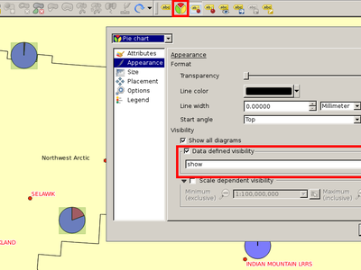
Esta funcionalidade foi fundada por MEEM (French Ministry of Sustainable Development)
Esta funcionalidade foi desenvolvida por Paul Blottiere (Oslandia)
Renderização¶
Funcionalidade: Novas opções para simplificação imediata¶
The user can select the algorithm to use when the local-side simplification runs to draw geometries faster. Now, QGIS provides three algorithms:
- Distance (default algorithm, and the only option available in previous QGIS releases)
- SnapToGrid
- Visvalingam
This change also moves the local “on-the-fly” simplification from the provider and iterator classes to the rendering code. This avoids cases where simplification changes the geometry fetched from vector data providers, possibly affecting rule based and other expression based symbology. This is important when you have expressions that use the feature geometry (e.g. calculation of area) - we want to be sure that these calculations are done on the original geometry, not on the simplified ones.

Esta funcionalidade foi desenvolvida por Alvaro Huarte
Funcionalidade: Classificação por quantis para camadas raster¶
This option can be found for single band pseudocolor rasters in the classification
mode dialog.

Esta funcionalidade foi desenvolvida por Piers Titus van der Torren
Feature: Live hillshade renderer¶
QGIS 2.16 has a new raster renderer that will dynamically create a hillshade model from a Digital Elevation Model.

Este recurso foi desenvolvido por Asger Skovbo Petersen e Nathan Woodrow
Digitizing¶
Feature: “Repeating” locking mode for constraints¶
When enabled, repeating locks are not automatically cleared when a new point is
added. They are handy when the same constraint must be repeated for multiple
points (eg adding vertices which are always 50 meters apart). This functionality
is available in the Advanced Digitizing Panel.

Este recurso foi desenvolvido por Nyall Dawson (North Road)
Feature: Extend linestring geometries with reshape tool¶
The reshape tool now allows you to extend linestrings, by starting a reshape at either a line’s start or end point.

Esta funcionalidade foi desenvolvida por Martin Dobias
Funcionalidade: Tolerância de segmentação¶
Support was added to set the segmentation tolerance (maximum angle or maximum difference).
This setting controls the way circular arcs are rendered. The smaller maximum angle
(in degrees) or maximum difference (in map units), the more straight line segments
will be used during rendering. You can find this option in
Settings -> Options -> Rendering -> Curve Segmentation.

Esta funcionalidadefoi desenvolvida por Marco Hugentobler
Gerenciamento de dados¶
Funcionalidade: Novas opções de configuração para a tabela de atributos¶
- Permitir reordenar as colunas da tabela de atributos (através do clique direito no cabeçalho do nome do campo -> “Organizar Colunas”, arrastar e soltar para reordenar)
- Permitir adicionar uma nova coluna à tabela de atributos para manter botões para acionar uma ação com base no recurso escolhido
- Colunas podem ser escondidas na tabela de atributos (clicando com o botão direito no nome do campo)
- QGIS agora lembra a largura de qualquer coluna redimensionada

Este recurso foi financiado pelo Cantão de Zug, na Suíça <http://geo.zg.ch/> __ e `MEEM (Ministério Francês do Desenvolvimento Sustentável) <http://www.developpement-durable.gouv.fr/ > `__
Este recurso foi desenvolvido por Stéphane Brunner (Camptocamp) <http://www.camptocamp.com/> __ e Matthias Kuhn (OPENGIS.ch) <http://www.opengis.ch/> __
Funcionalidade: Várias colunas em formulários de atributo¶
Ao usar o designer de arrastar e soltar, um usuário pode especificar quantas colunas os campos devem ser distribuídos.
Para ativar várias colunas na guia “Campos” das propriedades da camada:
- Certifique-se de que está utilizando o modo de formulário do desenhador de arrastar e soltar
- Clique duas vezes em contêineres de grupos, como guias ou grupos
- Uma pequena caixa de diálogo aparecerá onde você pode selecionar o número de colunas
A ordem será a primeira coluna, a segunda coluna, a nª coluna, a próxima linha, etc.

Esta funcionalidade foi desenvolvida por Canton of Zug, Switzerland
Esta funcionalidade foi desenvolvida por Matthias Kuhn
Recurso: controle sobre atributos para exportar ao salvar uma camada vetorial¶
Caixas de seleção foram adicionadas para que você possa selecionar quais atributos deseja incluir na exportação e agora também tem a opção de gravar valores “exibidos” em vez de valores brutos. Essa opção é útil para camadas com relações, nas quais você deseja incluir um valor literal em vez de um identificador numérico.
Dependendo do formato dos dados, o “valor exibido” é ativado por padrão, por exemplo, para exportar para formatos de planilha (ODF, XLSX, CSV / Text).
Este recurso foi parcialmente financiado pelo Canton of Zug, Suíça <http://geo.zg.ch/> __
Esta funcionalidade foi fundada por Jürgen Fischer, Even Rouault
Funcionalidade: Visualização de formulários: coluna lateral agora classificável¶
No modo de formulários da tabela de atributos do QGIS, há uma coluna lateral que pode ser usada para saltar diretamente para um recurso específico. Até esta versão, essa visão lateral não era classificável. Para classificar, era preciso pular para o modo de tabela e depois voltar para o modo de formulário. Agora é possível classificar diretamente o recurso pela visualização do atributo do recurso no painel lateral, escolhendo a função de classificação no botão suspenso de expressão acima da coluna lateral.
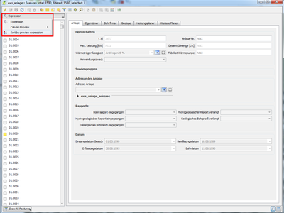
Esta funcionalidade foi desenvolvida por Canton of Zug, Switzerland
Esta funcionalidade foi desenvolvida por Matthias Kuhn (OpenGIS)
Recurso: widget de referência de referência: atalho para adicionar novos valores¶
O widget de referência de referência foi aprimorado para permitir extensões mais rápidas de listas de valores relacionadas. Se a caixa de seleção “Permitir adição de novos recursos” estiver ativada nas propriedades do widget (acesso através da guia “Campos” nas propriedades da camada), um botão verde mais aparecerá à direita do widget. Depois de pressionar o botão “Mais”, a caixa de diálogo da tabela relacionada será aberta no modo “novo registro”, onde é possível adicionar uma entrada adicional.
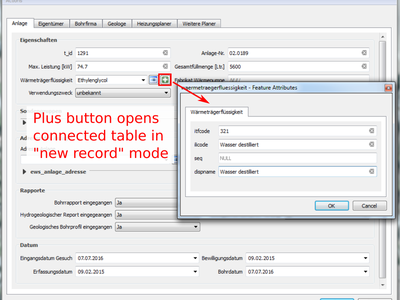
Esta funcionalidade foi desenvolvida por Canton of Zug, Switzerland
Esta funcionalidade foi desenvolvida por Matthias Kuhn (OpenGIS)
Funcionalidade: Melhorias na exportação de DXF¶
O suporte foi adicionado para rotulagem baseada em regras e símbolos rotacionados e para a saída de geometrias 3D.

Esta funcionalidade foi desenvolvida por Jürgen Fischer
Recurso: widgets de nível superior no designer de arrastar e soltar¶
Agora é possível colocar widgets diretamente no formulário com o criador de arrastar e soltar. Um formulário de designer de arrastar e soltar pode, portanto, existir sem nenhuma aba.

Esta funcionalidade foi desenvolvida por Matthias Kuhn
Recurso: selecione com base em formulário e filtre¶
No QGIS 2.16, um novo modo foi adicionado ao diálogo da tabela de atributos para recursos de pesquisa e filtragem. Quando ativado (usando um botão na barra de ferramentas ou pressionando: kbd: CTRL + F), o diálogo mudará para a visualização de formulário e todos os widgets serão substituídos pela variante de invólucro do widget de pesquisa.
Juntamente com cada widget existe um botão de ferramenta com opções para controlar o comportamento de pesquisa / filtro para esse campo, por exemplo “igual a”, “diferente de”, “é nulo”, “maior que”, etc., com as opções apresentadas combinando-se com o campo e o tipo de widget correspondentes.
Novos botões aparecem na parte inferior do formulário para selecionar recursos correspondentes (com opções para adicionar / selecionar seleção / selecionar na seleção atual) ou filtrar recursos na tabela (com opções para adicionar recursos a um filtro atual ou restringir ainda mais um filtro atual).
Você também pode acessar este modo com a nova opção “Selecionar por valor” ou pressionando F3 com uma camada selecionada.

Este recurso foi financiado pelo SIGE, Cidade de Uster, Morges
Este recurso foi desenvolvido por Nyall Dawson (North Road)
Funcionalidade: Cria camadas GeoPackage¶
O formato GeoPackage <http://www.geopackage.org> __ é um padrão aberto para dados geoespaciais que deve estar no seu radar como substituto do formato ESRI Shapefile. Ele aborda muitas deficiências com o formato de arquivo de formato, incluindo limitações no número e na largura dos campos. No QGIS 2.16 agora é fácil criar um novo GeoPackage, já que ele foi integrado à barra de ferramentas `` Layer`` e `` Layer -> Create Layer``.

Essa funcionalidade foi desenvolvida por Even Rouault
Recurso: restrições em widgets¶
Nas versões anteriores do QGIS, não havia como verificar a validade dos valores inseridos por um usuário para os atributos de um recurso. Agora, um usuário pode especificar uma restrição em cada widget no formulário de atributo de uma camada. As restrições são criadas usando expressões do QGIS, por exemplo, `` “min_population”> 50000``. Uma caixa de seleção “Não Nulo” também está disponível para indicar que um valor deve ser inserido para o campo. Além disso, o texto descritivo pode ser adicionado para fornecer feedback útil ao usuário quando uma restrição falha.
As restrições são avaliadas dinamicamente enquanto um usuário está modificando um recurso. Uma dica de ferramenta está disponível em qualquer campo que tenha uma restrição, mostrando a expressão da restrição, o resultado da avaliação e uma descrição da restrição. Uma barra de mensagens também será exibida na parte superior do formulário, resumindo todos os campos que não atenderem aos critérios de restrição.

This feature was funded by the QWAT project and the Canton of Zug, Switzerland
This feature was developed by Matthias Kuhn (OPENGIS.ch) and Paul Blottiere (Oslandia)
Feição: Editar atributos de várias feições simultaneamente¶
This change allows the attributes of multiple features to be edited simultaneously.
It is enabled when the attribute table dialog is in “form mode”, via a new “multi
edit” button on the toolbar. There’s also a shortcut to edit multiple selected
features by using Edit -> Modify Attributes of Selected Features.
In this mode, attribute value changes will apply to all selected features. New widgets appear next to each editor widget allowing for display of the current multi-edit state and for rolling back changes on a field-by-field basis.
Changes are made as a single edit command, so pressing undo will rollback the attribute changes for all selected features at once.
Multiedit mode is only available for auto generated and drag and drop forms - it is not supported by custom ui forms.

This feature was funded by Kanton Basel Stadt
Este recurso foi desenvolvido por Nyall Dawson (North Road)
Layer Legend¶
Feature: New option to zoom to a layer’s visible scale range¶
For layers with a visible scale range set, selecting this option will automatically set the scale to the closest scale where the layer is visible. Additionally, the interface has been tweaked so that layers which are outside their scale range and hidden are shown greyed out in the layer tree.

Esta funcionalidade foi fundada por MEEM (French Ministry of Sustainable Development)
Essa funcionalidade foi desenvolvida por ‘Patrick Valsecchi (Camptocamp) <http://www.camptocamp.com/>`__
Compositor de Mapa¶
Feição: Ferramenta nova para desenhar polígonos e polilinhas¶
Two new types of composer shape items, based on nodes, are now available in the map composer. Using these you can draw polygons or polylines within your composition in just a few clicks.
New tools have also been added to allow editing nodes (ie move or remove nodes) and also to add new nodes to an existing shape. Composer polygon and polyline items can also be styled using all the symbol styles available for line and polygon layers!

Esta funcionalidade foi fundada por MEEM (French Ministry of Sustainable Development)
Esta funcionalidade foi desenvolvida por Paul Blottiere (Oslandia)
Feature: Relative links in composer labels¶
Now labels and HTML boxes can contain relative URLs. If we don’t have a base URL, the project file will be used as a base URL.

Esta funcionalidade foi fundada por MEEM (French Ministry of Sustainable Development)
Essa funcionalidade foi desenvolvida por ‘Patrick Valsecchi (Camptocamp) <http://www.camptocamp.com/>`__
Feature: Embed atlas features into composer HTML source as GeoJSON¶
This change makes the current atlas feature (and additionally all attributes of related child features) available to the source of a composer HTML item, allowing the item to dynamically adjust its rendered HTML in response to the feature’s properties. An example use case is dynamically populating a HTML table with all the attributes of related child features for the atlas feature.
To use this, the HTML source must implement a “setFeature(feature)” JavaScript function. This function is called whenever the atlas feature changes, and is passed the atlas feature (and all related attributes) as a GeoJSON Feature.

Esta funcionalidade foi desenvolvida por Canton of Zug, Switzerland
Essa funcionalidade foi desenvolvida por Nyall Dawson (North Road)
Feature: Parameterized svg support for composer svg images¶
This change makes it possible to change an SVG files fill and outline colors, and outline width when using parameterised SVG files such as those included with QGIS. For more details on parameterised SVG files see this article.
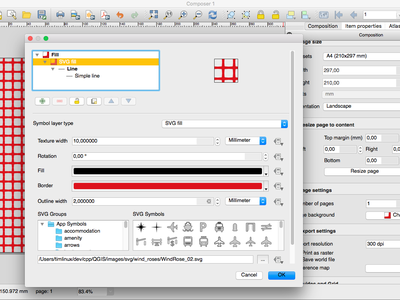
Este recurso foi desenvolvido por Nyall Dawson (North Road)
Feature: Easier use of HTML in labels¶
In QGIS 2.16, the base stylesheet of composer labels will automatically set the label font and margins to match the label’s settings. This allows interactive choice of font, margins and colors and avoids the need to manually set these with CSS within the label HTML code.

Este recurso foi desenvolvido por Nyall Dawson (North Road)
Feature: Georeference outputs (eg PDF) from composer¶
In QGIS 2.16 the map composer automatically georeferences outputs (when the output format makes this possible, eg TIF and PDF).
The existing option to create a world file has been separated from the map selection for georeferencing. The new behaviour is to always georeference outputs, and only create the separate world file if that option is checked.

Este recurso foi desenvolvido por Nyall Dawson (North Road)
Feature: Composer maps now auto-update with presets¶
When a composer map is set to follow a style preset, it will automatically be updated whenever the style is changed.
A new option has been added in composer map properties: “Follow visibility preset” with a combo box to choose the active preset. This is an alternative to “lock layers” (and “lock layer styles”) functionality which just copy a preset’s configuration, while this new option creates a link to the preset.
The difference is that when a preset is updated, composer map will automatically pick the new configuration when following the preset, while there is no update if “lock layers” (and “lock layer styles”) option is used.

Esta funcionalidade foi desenvolvida por Martin Dobias
Ferramentas de análise¶
Funcionalidade: Parâmetros nomeados em expressões¶
In QGIS 2.16 the expression engine now supports use of named parameters.
This means that instead of writing the cryptic expression:
clamp(1,2,3)
you can use:
clamp( min:=1, value:=2, max:=3).
This change also allows arguments to be switched, eg:
clamp( value:=2, max:=3, min:=1).
Using named parameters helps clarify what the arguments for an expression function refer to, which is helpful when you are trying to interpret an expression at a later date!
Este recurso foi desenvolvido por Nyall Dawson (North Road)
Funcionalidade: Mais unidades de distância¶
The choice of distance units has been widened, with new options including kilometers, yards and miles. Using these units prevents the need for manual conversion of distances (eg feet to miles).
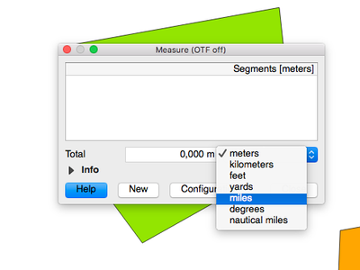
Este recurso foi desenvolvido por Nyall Dawson (North Road)
Feature: Changes to expressions¶
- Support
date + time= datetime calculations - Support for
date - date,time - timeanddatetime - datetimetype calculations which return an interval. - New
char()function for returning a matching character by unicode value
Feature: Statistics for string and date fields¶
The statistical summary dock can now calculate aggregate statistics for string and date fields.
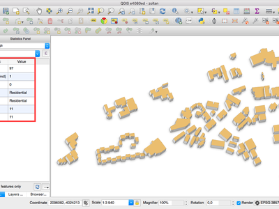
Este recurso foi desenvolvido por Nyall Dawson (North Road)
Feature: Show curve point radius in info tool¶
If you click on a curved line using the info tool, QGIS will now display the radius in the info tool.

Esta funcionalidadefoi desenvolvida por Marco Hugentobler
Funcionalidade: Suporte agregado para expressões¶
QGIS 2.16 adds support for a several types of aggregates to the expression engine. These include:
- Aggregates within the current layer, eg
sum("passengers")Supports sub expressions (iesum("passengers"/2)), group by (sum("passengers", group_by:="line_segment")), and optional filters (sum("passengers", filter:= "station_class" > 3 )) - Relational aggregates, which calculate an aggregate over all matching child
features from a relation, eg
relation_aggregate( 'my_relation', 'mean', "some_child_field" ) - A summary aggregate function, for calculating aggregates on other layers.
Eg
aggregate('rail_station_layer','sum',"passengers"). The summary aggregate function supports an optional filter, making it possible to calculate things like:aggregate('rail_stations','sum',"passengers", intersects(@atlas_geometry, $geometry ) )for calculating the total number of passengers for the stations inside the current atlas feature
In all cases the calculations are cached inside the expression context, so they only need to be calculated once for each set of expression evaluations.
Esta funcionalidade foi desenvolvida por Canton of Zug, Switzerland
Este recurso foi desenvolvido por Nyall Dawson (North Road)
Funcionalidade: Plugin fTools foi substituído por Algoritmos de Processamento¶
fTools is a core plugin that for many years has provided the tools found in the
Vector menu in QGIS. With the advent of the QGIS processing framework, the
fTools began to represent a duplication of effort, and many of the tools have
been improved in their Processing equivalents. To address, the fTools plugin has
been removed from QGIS and equivalent menu entries have been added to the vector
menu, pointing to the Processing framework tools that achieve the same thing.

Essa funcionalidade foi desenvolvida por Alex Bruy
Processamento¶
Feature: Set point locations by clicking on canvas¶
Processing parameters expecting a point location can now be set via clicking a location on the map canvas. Previously, coordinates had to be manually entered.
Essa funcionalidade foi desenvolvida por Alex Bruy
Funcionalidade: Suporte para expressões e variáveis¶
Inputs and outputs in algorithm dialogs now support QGIS expressions and variables.
Essa funcionalidade foi desenvolvida por Victor Olaya
Funcionalidade: Algoritmos pré-configurados¶
Algoritmos com parâmetros pré-configurados podem agora ser adicionados à caixa de ferramentas de processamento, como um atalho para o dado processo.
Essa funcionalidade foi desenvolvida por Victor Olaya
Feature: Create a plugin with script-based algorithms from the toolbox¶
Previously, the only way to create a QGIS plugin which added new algorithms to Processing was to manually develop those algorithms and create a new algorithm provider. Now, algorithms can be written as simple Processing scripts, and a plugin containing them can be created directly from the Processing Toolbox. That plugin can be then distributed as a regular plugin, and will extend Processing when active.
Essa funcionalidade foi desenvolvida por Victor Olaya
Funcionalidade: Suporte para tabelas escritas sem geometria¶
The OutputVector algorithm now supports writing geometryless tables.
For now, this has only been applied on Refactor Fields algorithm but could easily extended to other attributes related algorithms.
Esta funcionalidade foi fundada por MEEM (French Ministry of Sustainable Development)
Essa funcionalidade foi desenvolvida por Arnaud Morvan (Camptocamp)
Funcionalidade: Algoritmos adicionais GRASS em processamento¶
Para essa versão, a caixa de processamento do QGIS incluiu todos os algorítimos de vetor, raster e imageamento do GRASS7. Agora, há mais de 300 algoritmos para você usar diretamente da interface do QGIS. Você tem todo o poder de GRASS7 incorporadas diretamente QGIS e você pode misturar algoritmos GRASS7 com todos os outros algoritmos de processamento sem ter que usar um banco de dados GRASS7.
Some unit tests (mostly for raster and imagery algorithms) have also been included for some algorithms, making bug detection easier to handle and to process.
Note that, for the moment, GRASS7 Processing algorithms can only use and produce Shapefile vector layers and GeoTiff rasters. There is also a limit for some GRASS7 raster algorithms (all of the algorithms that are manipulating color tables) which duplicate raster layers to temporary directories. Depending on the size of your source rasters, you will probably need some disk space to handle them.
Essa funcionalidade foi desenvolvida por Médéric Ribreux
Provedores de Dados¶
Feature: OGR datasets are opened in read-only mode by default¶
Allows concurrent editing of Shapefiles and Tabfiles in both QGIS & MapInfo.
Esta funcionalidade foi fundada por MEEM (French Ministry of Sustainable Development)
Essa funcionalidade foi desenvolvida por Even Rouault
Feature: Improved handling of Postgres DOMAIN type fields¶
O QGIS agora mostra o tipo de domínio correto como nome do tipo de campo, e é capaz de determinar corretamente o comprimento e precisão dos tipos de domínio. Veja a documentação do PostgreSQL Para encontrar mais informações sobre tipos de DOMÍNIO.
Este recurso foi desenvolvido por Nyall Dawson (North Road)
Funcionalidade: Crie o modo de apenas leitura para camadas de vetores configuráveis no projeto¶
Using this option, you can prevent users from inadvertently editing layers.
Go to Project properties -> Identify layers to configure which layers
should be presented as read only.

Esta funcionalidade foi desenvolvida por Matthias Kuhn
Funcionalidade: Suporte para base de dados DB2¶
Essa funcionalidade foi desenvolvida por David Adler
Feature: OGR FID attribute shown¶
QGIS now exposes the OGR FID as first attribute when it is meaningful, eg for GPKG and other database based drivers.
Essa funcionalidade foi desenvolvida por Even Rouault
Feature: ArcGIS Map and Feature REST services¶
QGIS está agora apto a conectar aos serviços ArcGIS REST.
You can connect to ArcGIS Feature services (WFS equivalent in ESRI world) and ArcGIS Map services (WMS equivalent). The provider allows you to read maps and vector layers from those services.
This feature is quite convenient for users who would like to switch from an ESRI GIS stack without losing anything they already have built on private or public map services. You can also connect to public services provided by ESRI.
Esta funcionalidade foi fundada por Sourcepole QGIS Enterprise
Essa funcionalidade foi desenvolvida por Sandro Mani, Sourcepole
Funcionalidade: Salve estilos em MS SQL e base de dados Oracle¶
Essa funcionalidade foi desenvolvida por Jürgen Fischer e Christian Frugard
Funcionalidade: Renomear campos em camadas¶
In QGIS 2.16 you can now rename fields in Postgres, Oracle, OGR and memory layers by double clicking the field name in the layer properties window.
Este recurso foi desenvolvido por Nyall Dawson (North Road)
Funcionalidade: Suporte básico para Oracle Workspace Manager¶
Suporte adicionado para Oracle Workspace Manager quando utilizando o Oracle Provider.
Veja https://github.com/qgis/QGIS/commit/d161612bd216d36dc23ab2307636cf1bc0a36192
Esta funcionalidade foi fundada por ENEL
Essa funcionalidade foi desenvolvida por Jürgen Fischer for Faunalia
Funcionalidade: Melhorias massivas no Provedor WFS¶
QGIS 2.16 brings an overhaul of the WFS provider, including
- Autodetecção de versão
- On-disk caching of downloaded features
- Download em segundo plano e renderização progressiva
- Suporte para WFS 1.1 e 2.0
- WFS 2.0 GetFeature paging
- Adicionar testes de provedor
- Support for WFS 2.0 joins
- URI parameter with sql with SELECT / FROM / JOIN / WHERE / ORDER BY clauses
- Handle DateTime fields
- Enable “Only request features overlapping the view extent” by default (and memorize the settings)
- Support for additional/mixed geometry types (CurvePolygon, CompoundCurve)
- More tolerance for non-conforming WFS servers

Esta funcionalidade foi desenvolvida por Land Information New Zealand e Canton of Zug, Switzerland
Essa funcionalidade foi desenvolvida por Even Rouault
Feature: Generation of default values on Postgres layers “just in time”¶
The expression used to generate default values for a field on the postgres database are currently being printed on the feature form.
nextval('serial')
A new option in the “project properties” (tab “Data Sources”) allows evaluating the expression before opening the form and will directly print the new value in the feature form.
23
The main advantage of this improvement, is that one can now directly create and link records of related tables before having to save the data first, because the primary key is already present before the feature is saved.
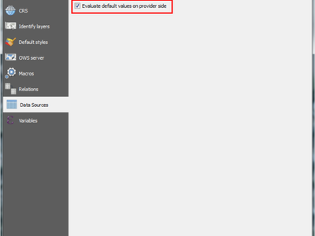
Esta funcionalidade foi desenvolvida por Canton of Zug, Switzerland
Esta funcionalidade foi desenvolvida por Matthias Kuhn
Servidor QGIS¶
Feature: Redlining support in GetMap and GetPrint¶
This feature was funded by Canton of Solothurn
Essa funcionalidade foi desenvolvida por Marco Hugentobler, Sourcepole
Feature: Default datum transformation for server¶
Will have to dig through https://github.com/qgis/QGIS/commit/70863ecaf0ccfcb538e3892af4b528304b21a0a2 to find details
Essa funcionalidade foi desenvolvida por Marco Hugentobler (Sourcepole)
Complementos¶
Feature: Refreshed globe plugin¶
- Atualize para OsgEarth 2.8
- Rewrite of QGIS globe tile driver
- Rewrite of synchronization logic between 2D and 3D
- Migration to new geometry kernel
- Support for multiple background layers
- Menus embedded in globe window
- Independent layer selection for globe
- Port of Mathias Kuhns master thesis work from QGIS 2.1/OsgEarth 2.4

Esta funcionalidade foi fundada por Sourcepole QGIS Enterprise
Essa funcionalidade foi desenvolvida por Sandro Mani, Sourcepole
Feature: Globe: Extrude objects¶
Allow extruding objects into the 3rd dimension.
Either by a fixed value or by an attribute or expression.
Esta funcionalidade foi desenvolvida por Matthias Kuhn
Feature: API: Add pages to vector layer properties¶
Allow adding additional pages to the vector layer properties dialog.
This allows putting the configuration for layer related options provided by a plugin directly where they belong for a better user experience.
Esta funcionalidade foi desenvolvida por Matthias Kuhn
Feature: Globe: Vector support¶
When displaying layers on globe, preserve vector data.
This feature was funded by Master Thesis UZH
Esta funcionalidade foi desenvolvida por Matthias Kuhn
Feature: Globe: Vertical exaggeration for DTM¶
Porque algumas vezes é bom exagerar sobre o tamanho.
Esta funcionalidade foi desenvolvida por Matthias Kuhn
Programabilidade¶
Feature: Embedded widgets in layer tree¶
This allows definition of widgets embedded into layer tree for individual layers in the layer properties dialog (in new Legend tab). The idea is to have a way to quickly access to some actions that are often used with a layer.
The implementation comes with transparency widget, in the future there may be more standard widgets coming, e.g. to setup filtering, selection, style or other stuff. The API allows plugins to register their own widgets, which will be useful for various domain specific plugins to assign custom widgets to layers they manage.

Este recurso foi desenvolvido por Martian Dobias
Feature: Plugins can add pages to vector layer properties¶
Essa funcionalidade foi desenvolvida por Sandro Mani (Sourcepole)
Novas classes do núcleo¶
- QgsComposerNodesItem - an abstract base class for composer items which provides generic methods for nodes based shapes such as polygons or polylines
- QgsComposerPolygon - a composer item for polygon shapes
- QgsComposerPolyline - a composer item for polyline shapes
- QgsGroupUngroupItemsCommand - a composer undo command class for grouping / ungrouping composer items
- QgsConstWkbSimplifierPtr - WKB reader which simplifies geometries on the fly
- QgsAction - a utility class that encapsulates an action based on vector attributes
- QgsActionManager - stores and manages actions associated with a layer
- QgsAggregateCalculator - a utility class for calculating aggregates for a field (or expression) over the features from a vector layer
- QgsAttributeTableConfig - a container for configuration of the attribute table for a vector layer
- QgsDateTimeStatisticalSummary - calculator for summary statistics and aggregates for a list of datetimes
- QgsInterval - a representation of the interval between two datetime values
- QgsJSONExporter - handles exporting QgsFeature features to GeoJSON features
- QgsJSONUtils - helper utilities for working with JSON and GeoJSON conversions
- QgsRuntimeProfiler - simple profiler for timing code paths during execution
- QgsSQLStatement - utility class for parsing SQL statements
- QgsStringStatisticalSummary - calculator for summary statistics and aggregates for a list of strings
- QgsHillshadeRenderer - a renderer for generating live hillshade models
- QgsArrowSymbolLayer - line symbol layer used for representing lines as arrows
- QgsNullSymbolRenderer - a renderer which draws no symbols for features by default, but allows for labeling and diagrams for the layer
- QgsSimpleMarkerSymbolLayerBase - abstract base class for simple marker symbol layers. Handles creation of the symbol shapes but leaves the actual drawing of the symbols to subclasses.
- QgsFilledMarkerSymbolLayer - filled marker symbol layer, consisting of a shape which is rendered using a QgsFillSymbolV2
Novas classes da GUI¶
Widgets reutilizáveis:¶
- QgsMultiEditToolButton - a tool button widget which is displayed next to editor widgets in attribute forms, and allows for controlling how the widget behaves and interacts with the form while in multi edit mode
- QgsSearchWidgetToolButton - a tool button widget which is displayed next to search widgets in forms, and allows for controlling how the widget behaves and how the filtering/searching operates
- QgsLayerTreeEmbeddedConfigWidget - a widget to configure layer tree embedded widgets for a particular map layer
- QgsLayerTreeEmbeddedWidgetProvider - provider interface to be implemented in order to introduce new kinds of embedded widgets for use in layer tree
- QgsLayerTreeEmbeddedWidgetRegistry - registry of widgets that may be embedded into layer tree view
- QgsAttributeFormEditorWidget - a widget consisting of both an editor widget and additional widgets for controlling the behaviour of the editor widget depending on a number of possible modes
- QgsComposerItemComboBox - a combo box which displays items of a matching type from a composition
- QgsCompoundColorWidget - a custom QGIS widget for selecting a color, including options for selecting colors via
- hue wheel, color swatches, and a color sampler
- QgsDockWidget - QDockWidget subclass with more fine-grained control over how the widget is closed or opened
- QgsFocusWatcher - an event filter for watching for focus events on a parent object
- QgsGradientStopEditor - an interactive editor for previewing a gradient color ramp and modifying the position of color stops along the gradient
- QgsMapLayerConfigWidget - a panel widget that can be shown in the map style dock
- QgsMapLayerConfigWidgetFactory - factory class for creating custom map layer property pages
- QgsPanelWidget - base class for any widget that can be shown as a inline panel
- QgsPanelWidgetWrapper - inline panel wrapper widget for existing widgets which can’t have the inheritance tree changed, e.g dialogs
- QgsPanelWidgetStack - a stack widget to manage panels in the interface
- QgsShortcutsManager - a class that contains a list of QActions and QShortcuts that have been registered and allows their shortcuts to be changed
- QgsTableWidgetItem - this can be used like a regular QTableWidgetItem with the difference that a specific role can be set to sort
- QgsHillshadeRendererWidget - renderer widget for configuring the hill shade renderer
- QgsRasterTransparencyWidget - widget for controlling a raster layer’s transparency and related options
- QgsArrowSymbolLayerWidget - renderer widget for configuring arrow symbol layers
Janelas reutilizáveis:¶
- QgsOrganizeTableColumnsDialog - dialog for organising (hiding and reordering) columns in the attributes table
- QgsConfigureShortcutsDialog - dialog for allowing users to configure shortcuts contained in a QgsShortcutsManager
- QgsNewGeoPackageLayerDialog - dialog to set up parameters to create a new GeoPackage layer
- QgsSourceSelectDialog - generic widget class for listing layers available from a remote service
Correções Importantes¶
Feature: QGIS Paid Bugfixing Programme¶
We did another round of paid bug fixing (thanks to our sponsors and donors!). Here follow the work summaries of the developers who participated:
Nyall Dawson¶
Here’s the full list (sorted by priority):
- Fix broken projective transform in georeferencer (#14551 - severe)
- Fix selecting features by radius fails (#14748 - severe)
- Fix incorrect area calculation for polygon (#14675 - severe, although very unlikely to occur. Unit tests added to cover this edge case)
- Fix dock widget layout (#15011 - severe)
- Fix crash in arrow symbol layer (unreported)
- Fix crash when creating invalid join (unreported)
- Fix parameterised SVGs not shown for composer arrow items (#14997 - high)
- Classifications on joined fields should only consider values which are matched to layer’s features (#9051 - high)
- Always use string comparison in expressions for string fields (#13204 - high)
- Fix home dir being added as default svg and template path (#14662, #14652, #14883 - high)
- Fix crash when using inverted polygons with heatmap renderer (#14968 - high)
- Save raster symbology values with full precision (#14950 - normal)
- Actions are not enabled when loading layer with default style (#13910 - normal)
- Remove “attribute table” text from dialog title (#14959 - normal)
- Fix cannot deactivate customization widget catcher (#9732 - normal)
- Fix arrow symbol layer head width/height flipped (#15002 - normal)
- Fix joins are not recreated when loading project with bad layers (#10500 - normal)
- Invalidate join cache when layer is modified (#11140 - normal)
- Correctly support joins using virtual fields (#14820 - normal)
- Fix virtual fields which depend on other virtual fields may not be calculated in some circumstances (#14939 - normal)
- Fix rule based labels not shown when using python expression functions (#14985 - normal)
- Auto refresh when symbol levels changed in style dock (#14861 - normal)
- Fix style dock button not synced to dock state (#14862 - normal)
- Fix issues rendering SVG with text (#14644, #14794 - normal)
- Ensure data defined button displayed fields are always up to date (#14809 - normal)
- Fix cannot set shortcut for zoom in (#14958 - normal)
- Fix inverted polygons and displacement renderer don’t allow right click on legend items (#14966 - normal)
- Fix inverted polygon & displacement renderer don’t show colour wheel in legend menu (#14967 - normal)
- Add missing proxies for legend check behaviour to sub renderers for inverted polygon and displacement renderers (unreported)
- Fix joined attributes can’t be used in filter expressions (#13176 - low)
- Show WKB type in vector layer metadata (unreported)
- Add missing capabilities strings to layer metadata (unreported)
- Fix debug noise when using 25D geometry layers (unreported)
- Fix some status bar widgets could not be hidden via customisation (unreported)
- Make styling widget live apply remember setting (unreported)
- Don’t show constraint messages when form is in search mode (unreported)
- Show scrollbars for attribute form as identify results (unreported)
- Make style dock Apply button always enabled (unreported)
- Fix some missing auto updates from style dock (unreported)
I also forward ported a bunch of fixes from Sourcepole’s fork.
Even Rouault¶
Here are the tickets he has dealt with during his allocated time for QGIS 2.16 bug fixing.
Severe/High:
- https://issues.qgis.org/issues/15006: Crashes in standalone browser
- https://issues.qgis.org/issues/14876: WFS client broken in QGIS master
- https://issues.qgis.org/issues/13762: Error accessing external WMS server – WMS provider: Cannot calculate extent
- https://issues.qgis.org/issues/14927: Attribute table sorting problem with qgis-rel-dev (2.14.X regression)
- https://issues.qgis.org/issues/15064: QGIS crashes on OGR layers with wkbUnknown25D, wkbUnknownM/Z/ZM layer geometry type
- https://issues.qgis.org/issues/14844: Oblique Mercator projection hanging when rendering map
- https://issues.qgis.org/issues/15047: ASSERT failure in QVector[HTML_REMOVED]::at: “index out of range” in qgis_attributetabletest (TestQgsAttributeTable)
- https://issues.qgis.org/issues/15087: Crash when deleting the last segment of a compoundcurve
Normal
- https://issues.qgis.org/issues/14965: wfs provider copies features when zooming in and out
- https://issues.qgis.org/issues/14928: WMS request without BBOX
- https://issues.qgis.org/issues/14999: Spatialite provider does not support alphanumeric primary keys (backport in 2.14)
- http://hub.qgis.org/issues/15061: Impossível adicionar camada WFS
- https://issues.qgis.org/issues/15065: Failed detection of geometry type in some conditions
- https://issues.qgis.org/issues/15066: OGR: Sublayers detected sometimes when not relevant (Polygon/CurvePolygon)
- https://issues.qgis.org/issues/15067: DXF export creates invalid file
- https://issues.qgis.org/issues/15081: Impossible to clear geometry of feature from a shapefile
- unreported [Geometry] Fix various issues related to Wkb/Wkt import
Outro:
- https://issues.qgis.org/issues/14981: Import of Shapefile to Geopackage-Database in DB-Manager fails (analysis)
- https://issues.qgis.org/issues/15011: Browser panel is unusable (bisection & analysis)
- https://issues.qgis.org/issues/14909: regression: QGIS crashes when closing docked attribute table (analysis)
- https://issues.qgis.org/issues/13353: QGIS and gdal 2.0.0 (closed: no further action needed)
- https://issues.qgis.org/issues/15053: WMS with EPSG:31255 is shifted (datum=hermannskogel) (analysis. probably outdated proj.4 version)
Sandro Santilli¶
- http://hub.qgis.org/issues/14262: Overflow on primary key with negative values; cannot save edits
- http://hub.qgis.org/issues/12228: Deadlock from parallel rendering
- http://hub.qgis.org/issues/11371: Map Composer: group + move + ungroup + undo = crash
- http://hub.qgis.org/issues/14976: Repository files modified by “make check”
- http://hub.qgis.org/issues/13635: Different handling of invalid geometries between LTR and master version
- http://hub.qgis.org/issues/13952: QGIS node tool causes snapping another feature randomly
Martin Dobias¶
- Digitizing: “Simplify Feature” should not open a dialog when no feature is clicked
- Digitizing: how to abort “Simplify Feature” or “Rotate Feature” tool is not that obvious
- One road missing upon Add Vector Layer!
- Autotracing fails with Circular Arcs in geometries
- WMS not working on master a625eeb (2.15.0-80)
- Processing preconfigured algorithms python error
- GPS não registra a geometria do ponto, apenas os valores dos atributos…
- style dock: transparency panel (global transparency, transparent pixel, etc.) not working for hillshade renderer
- style dock: back button & breadcrumb missing when a rule-based label rule is being edited
- Fix undo/redo for rule-based renderer/labeling in styling dock
- Fix updates of undo widget in styling panel
- style dock: hillshade renderer’s global transparency value resets after changing symbology settings
- style dock: values of raster’s layer rendering options not properly restored
Matthias Kuhn¶
- Improve QgsMapLayerRegistry stability
- Processing: Difference algorithm: don’t ignore invalid geometries by default
- Corrigidos alguns erros de compatibilidade com o Python 3
- Work on re-enabling osx tests (merged after 2.16 release)
- Documentação API
- startup.py é executado duas vezes
- UX fixes:
- Tabela de atributos: sempre mostra os números dos cabeçalhos das colunas em sequência
- Relation Reference Widget: Only enable form button when a feature is set
- Show feature id in attribute table tooltip
- Initial widget focus in credential dialog
- Default timeout for message bar items
- Add button” state in postgis source select dialog
- Install missing header files
- Crash on exit
- Network cache directory
- Feature form hidden behind main window on Windows
- Offline editing: Respect relative paths
- Offline editing: changed attributes end up in wrong feature
- Edição offline: Não trava com camadas raster
- Formulário relação crescem infinitamente
- Correção dos travamentos durante o carregamento de estilo em propriedades da camada
- Fix crash when closing docked attribute table
- Fix default-misconfigured gpsbabel path
- Mostrar contagem correta de feições com a regra que exige a geometria
- Corrigir acidente ao usar 2.5D renderização com camada incompatíveis